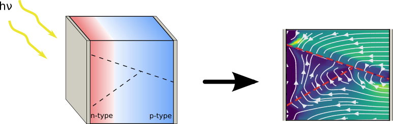

Optoelectronic modeling in multiple dimensions
Sesame is an open source drift-diffusion-Poisson solver in one and
two dimensions. It can describe optoelectronic devices such as
solar cells and LED's. Sesame is designed to easily model planar defects
such as grain boundaries and sample surfaces.

Download and install
Sesame is free software covered by the 3-clause
BSD license. The source code is available on Github.
A compiled version of the code has been built for Microsoft
Windows. The executable contains all the dependencies necessary to
run Sesame together with the tutorials. An installer of this distribution
is available.
Documentation and tutorials
A complete documentation of the distribution is available. It contains examples on how to run Sesame both from the command line and
the graphical user interface.
Certain commercial equipment, instruments, materials, systems, software, and
trade names may be identified throughout this site in order to specify or
identify technologies adequately. Such identification is not intended to imply
recommendation or endorsement by NIST or any other party, nor is it intended to
imply that the systems or products identified are necessarily the best available
for the purpose. All data and other information posted on this site is provided
as a public service and is provided “AS IS.” NIST MAKES NO WARRANTY OF ANY KIND,
EXPRESS, IMPLIED OR STATUTORY, INCLUDING, WITHOUT LIMITATION, THE IMPLIED
WARRANTY OF MERCHANTABILITY, FITNESS FOR A PARTICULAR PURPOSE, NON-INFRINGEMENT
AND DATA ACCURACY.